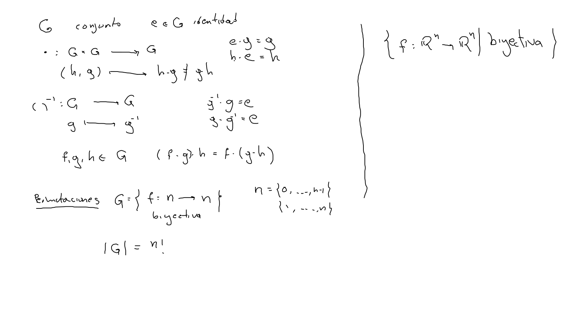
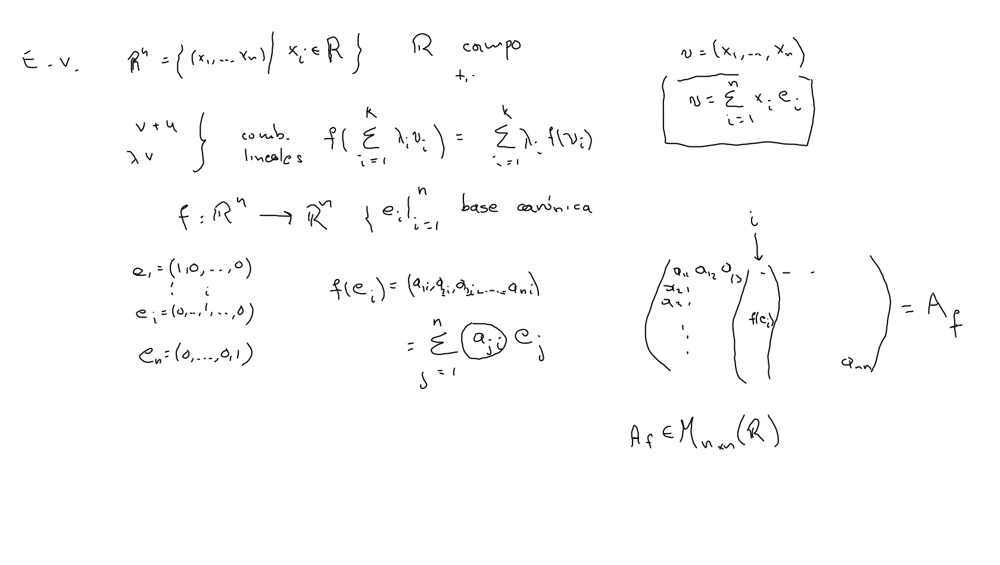
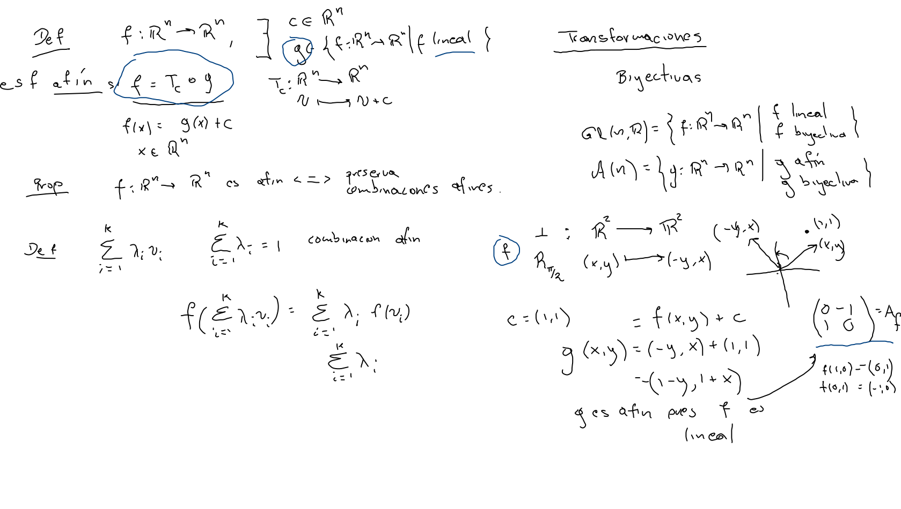

(G,e,⋅)(G,e,\cdot)(G,e,⋅) 
f(∑i1kλivi)=∑i1kλif(vi)f(\sum_{i_1}^k\lambda_i\mathbf v_i)=\sum_{i_1}^k\lambda_if(\mathbf v_i)f(i1∑kλivi)=i1∑kλif(vi)
Af=(f(e1)⋯f(en))A_f=(f(e_1)\cdots f(e_n))Af=(f(e1)⋯f(en)) 
g=f+Tcg=f+T_\mathbf cg=f+Tc 
f(∑i1krivi)=∑i1krif(vi);∑i1kri=1f(\sum_{i_1}^kr_i\mathbf v_i)=\sum_{i_1}^kr_if(\mathbf v_i);\quad\quad\sum_{i_1}^kr_i=1f(i1∑krivi)=i1∑krif(vi);i1∑kri=1